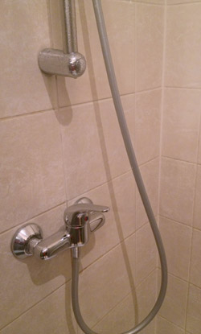

Part of the point of this meta post is to wrap-up some topics and thoughts from 02013 as well as looking back at some of the 20 articles and updating them with more examples, resources and ideas.
We start by saying good-bye to a wonderful 02013 and welcome to a new 02014. (optional.is) was founded in early 02011, so during 02013 we were two years old. It was meant to be our year of paper. We even have a stack of $2 bills! We were suppose to explore paper in all its shapes and forms, but work got in the way even though we did manage an articles on the topic of paper this year. We still love paper and with certainty, we’ll revisit paper. We collected lots of great resources; articles, books, links and colored paper all with the intention of creating. That won’t go to waste, it just might take a bit longer than expected.
As part of our quarterly contest, we gave-a-way several paper related objects, from business cards, postcards, books and notebooks. We want to continue to do this in 02014. According to the Chinese calendar, this is the year of the Horse. Rather than be horse related with continual improvement, we’re going to embrace the randomness. Saying yes and no to different projects and ideas which we might not normally consider. Hopefully randomness will also bring in some diversity and make sure we have a better look at probabilities. For the contest this year we have several books on the topic of randomness which we’ll be giving-a-way to a random participant.
Welcome, 02014, the year of randomness.
Weeknotes
In 02013, we also began writing weeknotes. These are brief posts, usually wrapping-up the week. It creates a company pulse for others to get a basic look at what’s up and how things are developing in the company. We started in August on week #130. We’ve managed to keep a fairly good weekly pulse, sometimes fortnightly, but overall we’re happy with the mix of company updates and interesting links and videos we’ve come across during the week. The December holidays, time-off and travel have cramped out weeknotes as of late, but we’ll get back on them in 02014 for sure.
Tapped Out
 While travelling, I found this faucet design in the hotel shower. It is a regular sink faucet design, but now controlling a shower. On the surface this looks fine and makes complete sense, but it was designed by someone who never actually tested it.
When you are in the shower the control handle for the faucet is just about elbow height. This makes it incredibly inconvenient as you turn in the shower and bump it. I can’t count the number of times I knocked the handle and within seconds piping hot water came raining down on me.
Tricking the Stockmarket
This articles as an idea for an un-written short story on the topic of artificially influencing the stock market for financial gain via social media. After writing, I found a few articles along a similar vein. QZ wrote an article entitled: Experts are divided on whether Twitter-controlled stocks will end us all. It goes through the issues of social media, wisdom of crowds, style stock manipulations.
There still might be some threads which could be teased out into its own short story. If anyone is interested in reading such fiction, please let us know.
Color Symbols
Symbols for colors is something that fascinates us. Abstracting the underlying meaning is great because you should never use color as a reference. From different visual acuities to deficiencies, color is not a reliable way to convey meaning. Which is why symbols could be an alternative. If done well, they work cross-culturally, and language. The downside is that it is really hard to achieve that international recognition so that the words and terms fall away so only the new symbol is left.
After writing about the color symbols called colorAdd, we were pointed me to Feelipa Color Code. There must be something in the water because both are Portuguese. Something is brewing. It’s worth keeping an eye on.
Near future of sports from a spectator’s point of view
We don’t normally talk much about sports, but this FreeD technology brought us back to 02009 when we explored some ideas of what it might be like in the near future for sports spectators.

With the ubiquitous camera phone, photo-stitching technology and some server processing, what we talked about 5 years ago has come true. This will only get better and more and more interesting as well as creepy as we add drones and other sensors into the mix.
Spimes: A Happy Birthday Story
As our first piece of longer form fiction, the SPIME birthday story got some interesting feedback. We’re more happy with our time exploring digital formats for packaging it up and offline reading, like ePub and Mobi files for iOS, Android, Kindle and other devices. We all interested in what others thought about the story as well as ways to improve the digital editions.
If you missed it the first time, you can download the story here:
What to look forward to in 02014
We already know we’ll be heading back to Lisbon this year for UX-LX in June. We also have several projects which have been under development and under-wraps for several months now which are so very close to bursting through. Vísar/skólapúlsinn projects will begin to level-off this year and we’ll get back to more interesting and random projects to report on. We’ll also be moving office next month. We’ll still be in 101 Reykjavik, but we’re looking for something that better suits our needs and other team-members and companies we want to bring along with us.
The company as a whole was in profit for 02013. We’ll be putting together a series of posts about our 02013 Annual Report, similar to the 02012 Annual Report we produced. Hopefully this will aid others to gauge if their spending and time has been spent in similar or very different ways.